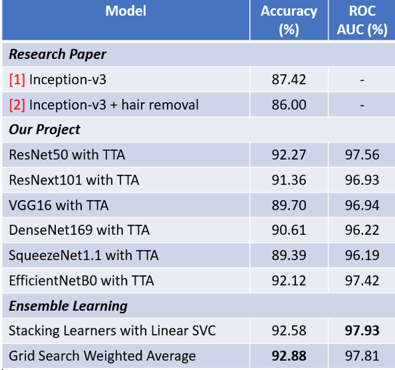
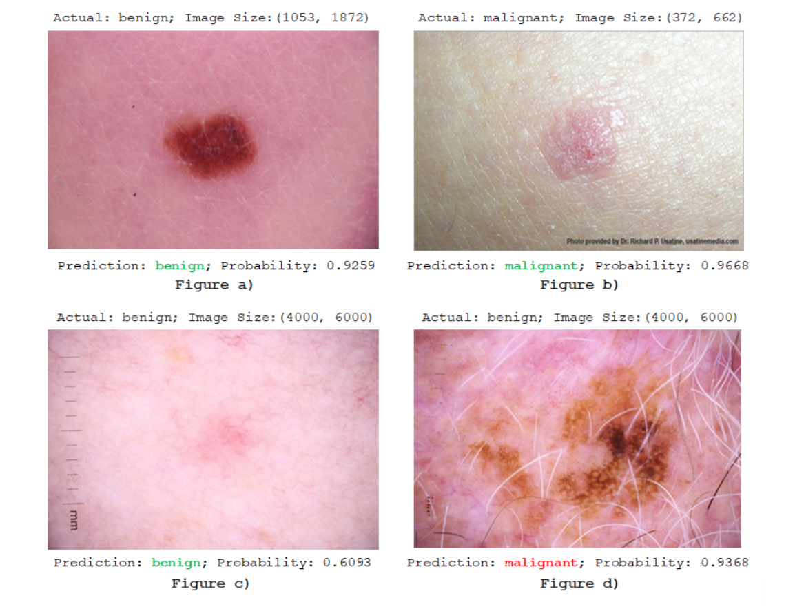

We will use the Fast.ai deep learning library (https://docs.fast.ai/), which has the advantage of having a learning rate finder function which returns a range of optimal learning rates. Fast.ai also allows the discriminative learning rates so that different layers of a neural network will be trained at different speeds.
We see that ensemble learning techniques improve prediction abilities of transfer learning. As a result, the stacking ensemble learning with Linear SVC has the highest AUC score of 0.9793 and the accuracy of 92.58% on the testing images.
Evaluation on Testing Images
Besides, the accuracy we obtained with our best model on the test dataset is the highest score (92.58%) comparing with all other kaggle notebooks on this problem (the date of 11/25/2020) https://www.kaggle.com/fanconic/skin-cancer-malignant-vs-benign/notebooks

Confusion Matrix and Classification report of the best model on the test images
After having the best model, we deploy the model so that it can be used in practice.
 Model performance with some online skin cancer images from Skin Cancer Image Gallery
The SVC-EL model successfully classified types of lesions in Figures a) and b) with above 90% probability. The model also predicted the Figure c) correctly with a lower confidence because the color of the lesion is faded compared with the color of patient skin. Beside, our training data does not contain this kind of moles, so the ML model is not confident about the prediction. In Figure d), the model completely misclassified the skin cancer. This image is very similar to malignant so that given only the image, doctors would classify it as a tumor.
Future Works
- Acquiring more variety images of skin cancer will definitely improve the generalization of model prediction.
- Using higher resolution images would allow CNN models to learn more about important feature extractions.
- With higher resolution and more data, the deeper transfer learning may be better.
- Having the same image perspective and image size may reduce a chance of machine misclassification.
- Deploy the final model with test time augmentation into a website for convenient usage of practitioners.
References
[1] Early Detection of Skin Cancer Using Deep Learning Architectures: Resnet-101 and Inception-v3
[2] Advanced Deep Learning Methodologies for Skin Cancer Classification in Prodromal Stages
[source1] (in FastAI) Ranger Optimizer
[source2] (in ResNet) An Overview of ResNet and its Variants
[source3] (in ResNeXt) Aggregated Residual Transformations for Deep Neural Networks
[source4] (in SqueezeNet) SqueezeNet: AlexNet-Level Accuracy with 50x Fewer Parameters and <0.5MB Model Size
[source5] (EfficientNet) EfficientNet: Rethinking Model Scaling for Convolutional Neural Networks
[source6] (in DenseNet) Densely Connected Convolutional Networks
[source7] (in EL) How to Develop a Weighted Average Ensemble for Deep Learning Neural Networks
[] Book (chapter 1,2,5,7)